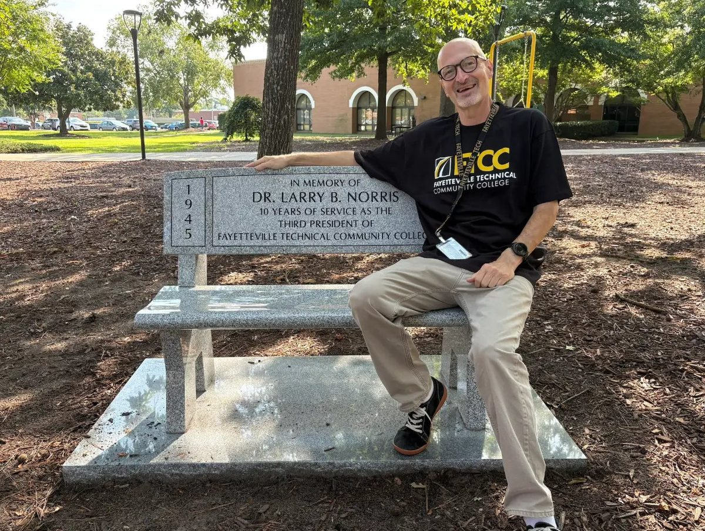
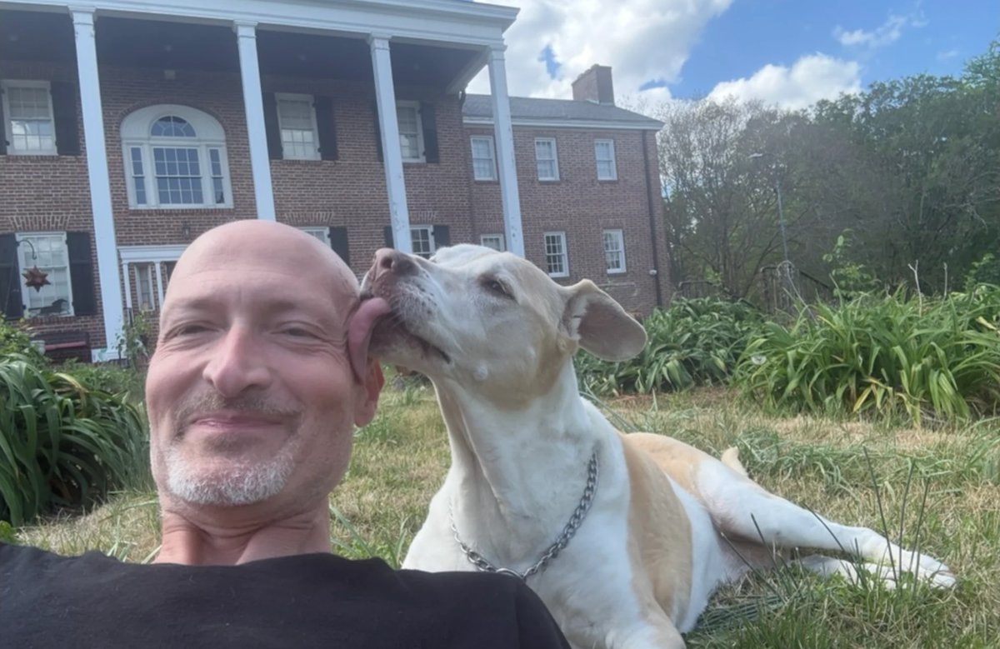

NCTLA Fall Virtual Tutoring Conference · 23 October 2026
Generated Is Not Learned
What did the student actually have to think about?
- Five tutor promptsCopy-ready prompts that give AI a different job, with filled-in examples and what to watch for.
- The Blackout TestThe live demo: black out the tutor, then see what the student can still do.
- SlidesThe session deck, as a PDF (5 MB).
About the speaker

Teaching computer programming at FTCC since 2015, capstone project leader since 2016, and AI instructor since 2023. Tutoring happens at the Friday Programming Help Lab: one-on-one help for students in the department, about 12 Fridays a semester.
